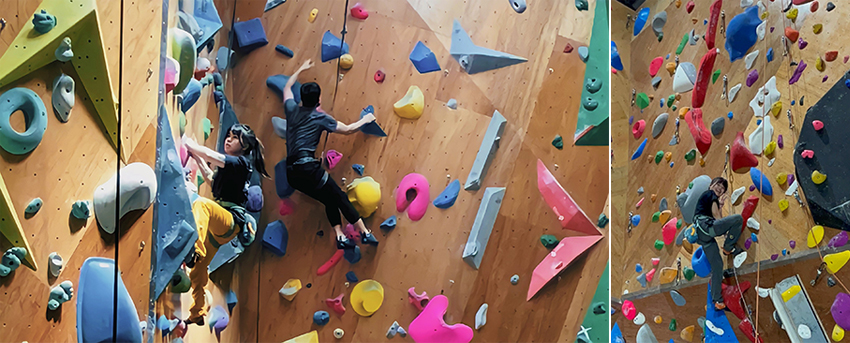
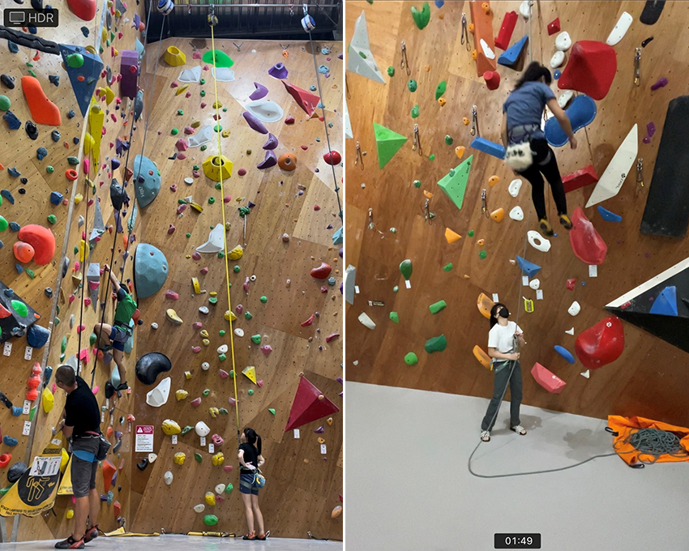
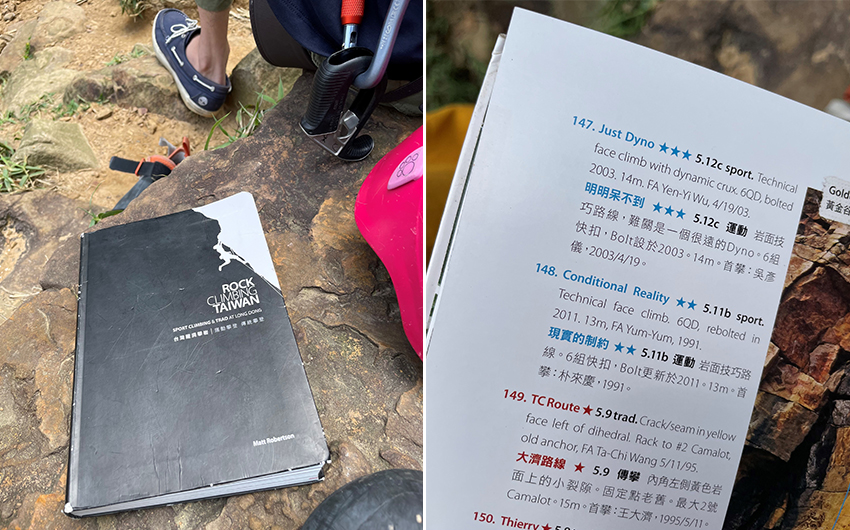
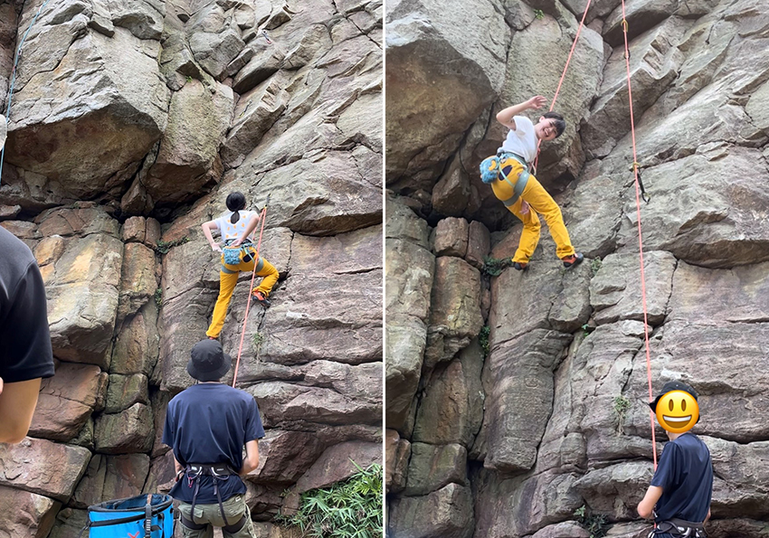
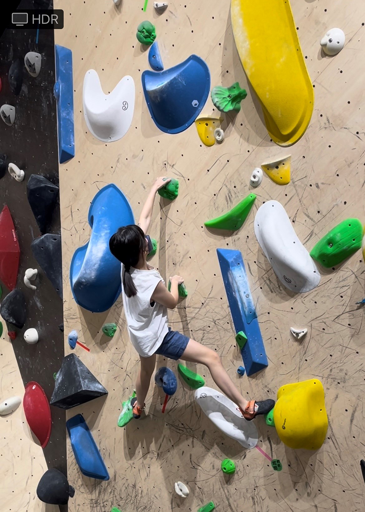
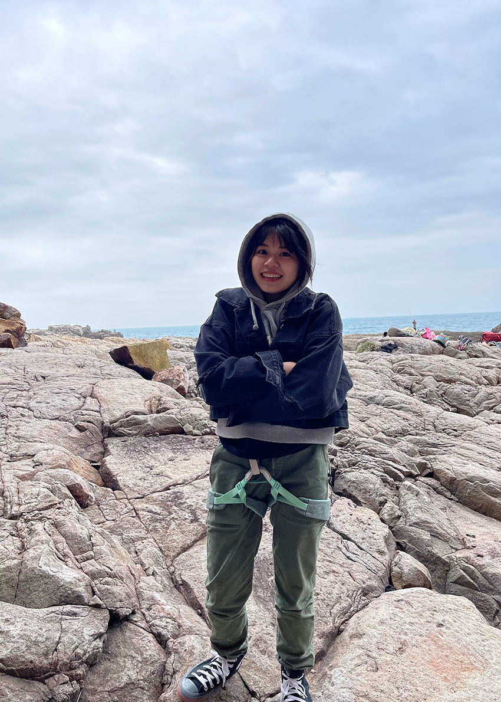

每當我和新朋友介紹我的興趣是攀岩時，他們都會露出很訝異的表情，大概是因為我矮矮胖胖的，搭配看起來沒有在曬太陽的膚色，但我確實沒有什麼運動細胞，會接觸是因為兩年前的我，發現生活只有公司和家裡的沙發，枯燥乏味沒有其他興趣和工作以外的目標，所以我開始嘗試各種事情，去溯溪玩溪降、報名自由潛水aida2、還有去一次就情有獨鍾的攀岩。
|  |
攀岩有傳統攀登和運動攀登，運動攀登又能分為兩種，分別是抱石和上攀，這兩種攀岩方式比較明顯的區別就是高度、裝備和夥伴的需要，抱石的高度大約3~4米，地板會鋪上軟墊做保護，上攀高度則是大約12~15米，身上要綁上吊帶和繩索，而我最喜歡的就是上攀。
第一次去攀岩館，我最簡單的一條路線爬不到三分之一，肚子緊張一直滾，甚至不敢從高處跳下來，回家覺得有點氣餒，所以隔天又跑去攀岩館，練習同一條路線，直到我摸到最高的岩點，並鼓起勇氣跳下來，那時滿滿的成就感，我到現在都還沒有忘記。
上攀的確保方式又有分為三種，自動確保、頂繩確保(top-rope)、先鋒攀登(leading)第一種是在天花板上有設置自動確保器，取代確保者，可以一個人完成。而頂繩和先鋒需要兩個人，一個攀登，一個控制繩子確保，頂繩和先鋒確保證照需要通過考試拿證照，那是因為這是一個危險，需要非常謹慎的運動，任何的操作不當都有可能會危害到攀登者的生命的，上課和考試的過程很嚴格，就是避免未來有任何不幸的發生。
|  | |
| 自動確保器 | 先鋒確保 |
除了室內攀岩，再來就是天然岩場了，台灣最具代表的天然岩場就在龍洞，也有一本非常有名的書《台灣龍洞攀岩》，裡面記載了各種龍洞攀岩的路線和等級，路線名字都取得非常有趣。
|  |
我第一個天然岩場選擇黃金谷，聽說因為那裡常常下雨，路途上充滿黃金色的泥濘，所以被稱為黃金谷，我去的每一次也都帶了兩隻鞋子的黃金。
天然岩場和室內岩場帶給我很不一樣的感覺，室內攀岩有用不同顏色區分路線的岩點，會清楚知道手該抓哪，腳該踩哪，但是在龍洞，就只有天然石頭的顏色，只有偶爾依據之前岩友留下的白粉痕跡判斷手點，但是這不影響攀岩帶來的樂趣，戶外攀岩也要非常小心，天然岩石非常的銳利，每次回家洗澡碰到水都會很痛苦，我都稱那些傷口為戰利品，但在龍洞攀岩最棒的是就是爬累的時候，可以躺在岩石上看海、吹風、睡午覺。
|  |
| 第一次先鋒外攀，抹點白粉觀察路線。 |
攀岩也被稱為牆上的芭蕾，因為攀岩不是要靠強而有力的手臂或背肌，攀岩多用到的是平衡、協調、核心，動作輕盈優雅像流水一樣，俐落分明沒有多餘的動作，這些要靠著，不斷練習、不斷修改，你需要精心策劃，並熟悉每一個動作，直到達成目標。
|  |
攀岩不只是一個刺激的運動，他教會我不要怕失敗，也不要輕言放棄，勇於嘗試和挑戰自己的不可能，很高興在這裡分享這項運動給大家，如果同仁有興趣或是其他關於攀岩想知道的，都歡迎彼此交流。
|  |